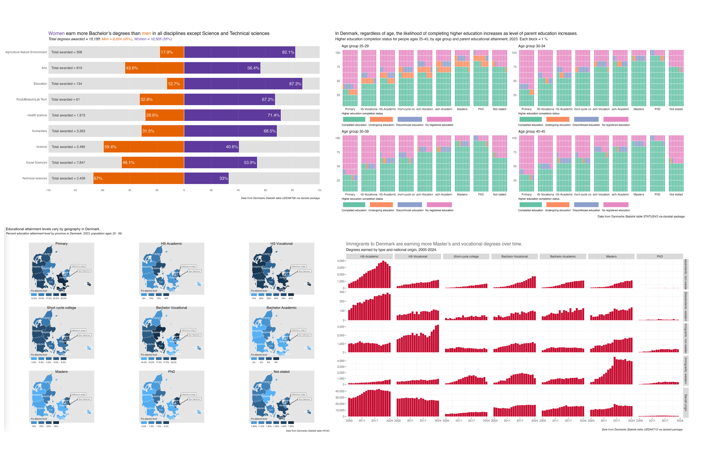
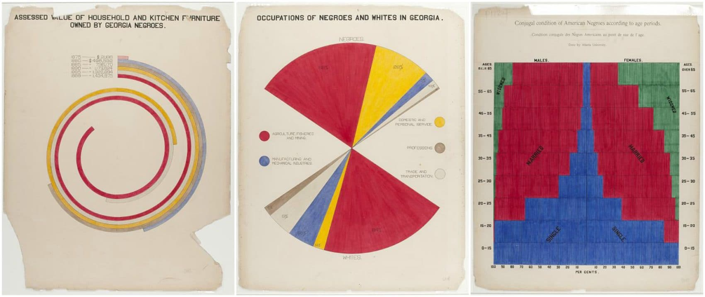
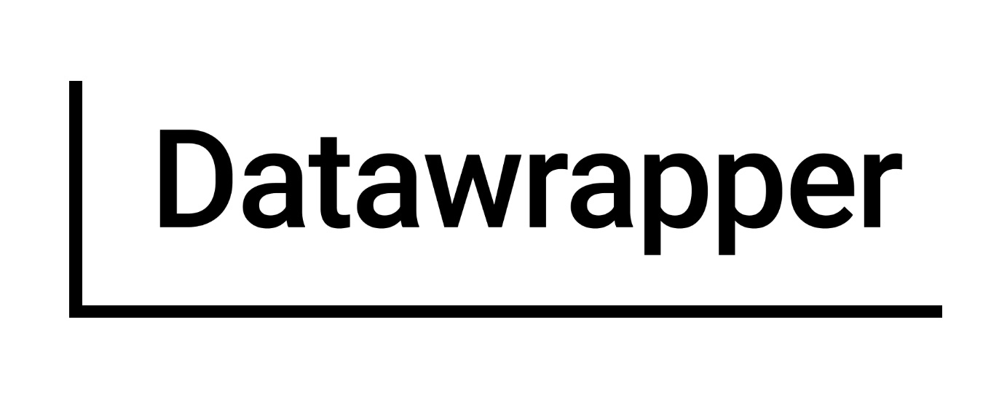

Social Science Data Analysis in r
Why -> Where -> How -> What -> Who
Gregers Kjerulf Dubrow
CopenhagenR
14 May, 2025

Social Science Data Analysis in r
The plan for this evening
-
Why a talk about social science data analysis?
- Social science is the root of data analysis & visualization
-
Where can I find data?
- There’s more to it than csv downloads
-
How do I analyse data and report what I find?
- It’s easier than ever to do the work and share it
-
What does it mean in the current context?
- Job market, ML, AI, business, government, research
- Who has thoughts or questions?
Why a talk on social sciences data analysis?
- It’s who I am
- Ph.D. in education policy, training in social science quantitative & qualitative methods
- Fifteen years as a data analyst reporting on college admissions & student success
- There is plenty of data available
- I’m also a teacher, so I want to inform and help other analysts to do good work
- Ph.D. in education policy, training in social science quantitative & qualitative methods
- Fifteen years as a data analyst reporting on college admissions & student success
- I’m also a teacher, so I want to inform and help other analysts to do good work
Why a talk on social sciences data analysis?
There’s more to it than Minard…
Why a talk on social sciences data analysis?
…social sciences shaped the data analysis & visualization fields


Where can I find data?
Way back when (late 1990s -> early 2000s)
Where can I find data now?
Where can I find data now?
Inspired - Packages with API wrappers and functions
Where can I find data now?
Inspired - Packages with API wrappers and functions
Where can I find data now?
Inspired - Packages with API wrappers and functions
A quick note of caution
Nothing lasts forever
-
API links can change
- Your scripts or automations may stop working
-
Packages need maintenance
- No updates mean broken scripts or automations
-
API endpoints can be shut down
- Spotify :(
-
Loss of funding
- Government, NGOs
(story from Inside Higher Ed on NCES layoffs)
- Government, NGOs
How do I analyze & visualize data and share my work?




Live coding demo
What does it all mean in the current context?
-
Data science/data analyst/BI analyst labor market
- It’s how we were trained, but it’s not all we can do
- Machine learning & AI are built on core statistics like regression
-
Transferable skills & how to demonstrate them
- Curiosity
- Adaptability
- Willingness to keep learning
-
What can you offer
- Insights that help the company or organization
- Contribute to the data community
- read & support data blogs
- post your own work, help others master skills or gain insights
- write packages if you have mastered an API
- attend meetups like this, support presenters, do your own presentations
What thoughts or questions do you have?
Thank you!
https://www.gregdubrow.io/
https://github.com/greg-dubrow
https://www.linkedin.com/in/dubrowg/
https://bsky.app/profile/gregerskjerulf.bsky.social
https://public.tableau.com/app/profile/greg.d6950/vizzes
ps - I’m available for freelance / contract data analysis & visualization projects, teaching, tutoring…